EXOS GPS Station (Windows) Field Manual
Comprehensive, button-by-button operational guide for the EXOS GPS Station Windows desktop client (v0.17). Every button is highlighted on the actual Windows desktop user interface snapshot, with layman explanations, real-world field scenarios, and underlying technical protocols.
Live Windows Desktop Interface
High-resolution mission-control dashboard running natively on Windows 10/11 x64 architecture.

Full Telemetry Command Center • Mission Control Layout
Integrated hardware port scanner, C# Windows location sensor bridge, 3D compass horizon, Natural Earth vector globe, and raw NMEA stream monitor.
Complete Button-by-Button Tactical Breakdown

Space-Tech Title & Corporate Identity Bar
Top Application Banner • Full Width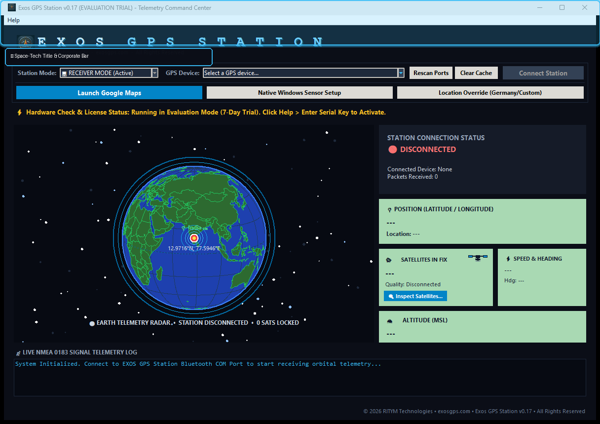
What it Does (In Plain English)
The mission-control header at the very top of the window displaying the NASA-style spaced title 'E X O S G P S S T A T I O N', along with the official RITYM Technologies legal branding and exosgps.com link.
Real-World Field Scenario
You launch EXOS GPS Station on your Windows 11 laptop. The glowing blue header confirms that the application is running in registered mission-control mode with authentic digital signatures.
Technical Specifications & Protocol Architecture
- Rendered on dark obsidian canvas (#0b0e17) with dual-layer glow text in monospace Courier New bold.
- Integrates official satellite vector icon asset and dynamic title bar decoration with active license state.
Hardware Status & Registered License Banner
Sub-Header Banner • Status IndicatorWhat it Does (In Plain English)
Shows whether your software is registered or running in evaluation trial mode. When activated, it turns bright green showing your company name and unlocking unlimited continuous sessions.
Real-World Field Scenario
You test the application on evaluation trial during sea trials. Upon purchasing a commercial license from exosgps.com, you enter your serial key. The banner turns bright green reading 'Registered License: Full Commercial Features Unlocked'.
Technical Specifications & Protocol Architecture
- Validates cryptographic license tokens via SHA-256 digital signature stored in %APPDATA%/EXOS_GPS/license.json.
- Toggles UI feature gates and unthrottles background outbound COM loopback forwarders.

Station Mode Selector (Receiver Mode)
Hardware Toolbar • Row 1 (Left)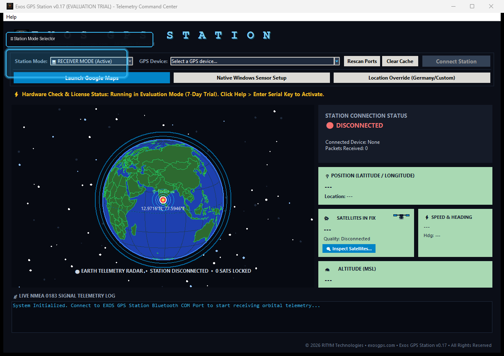
What it Does (In Plain English)
Sets whether your computer is RECEIVING GPS data from a smartphone/puck or TRANSMITTING its own USB GPS data to other computers across your local network.
Real-World Field Scenario
You connect your Samsung Galaxy Note 8 to your Windows laptop. The mode is set to 'RECEIVER MODE', telling the Windows app to listen for incoming Bluetooth NMEA sentences from your phone.
Technical Specifications & Protocol Architecture
- Selects between client serial stream consumer loop (RECEIVER) and local TCP server broadcaster (TRANSMITTER).
- Initializes socket worker threads and internal telemetry message queues.

GPS Device Hardware Dropdown Selector
Hardware Toolbar • Row 1 (Center)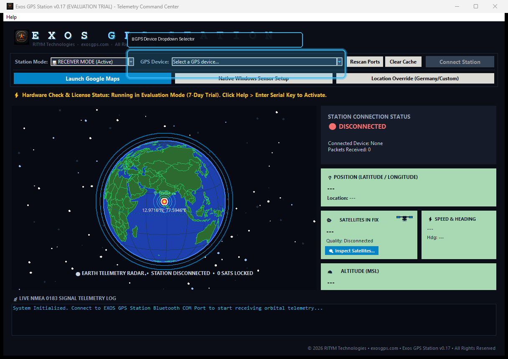
What it Does (In Plain English)
Lists every connected GPS device, USB dongle, and paired smartphone. It clearly displays friendly device names like 'Hardware GPS - Bluetooth - Galaxy Note 8' so you don't have to guess random COM port numbers.
Real-World Field Scenario
You open the dropdown. Instead of showing cryptic port names like COM7 or COM14, EXOS GPS Station clearly lists 'Hardware GPS - Bluetooth - Galaxy Note 8 [SPP]'. You click your phone name and you are ready to connect.
Technical Specifications & Protocol Architecture
- Queries Windows PnP SetupAPI and resolves Bluetooth remote device names, SDP service records, and USB VID/PID hardware identifiers.
- Prioritizes low-latency RFCOMM COM ports bound to the Bluetooth SPP GUID.

Rescan Ports Button (Windows PnP Scanner)
Hardware Toolbar • Row 1 (Center-Right)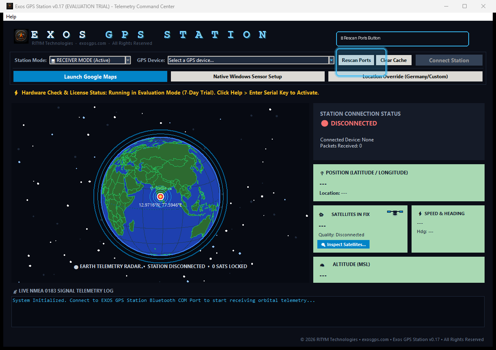
What it Does (In Plain English)
Searches your entire computer for newly connected GPS devices, USB cables, or paired phones without having to restart the program.
Real-World Field Scenario
You plug in a new USB GPS receiver or turn on Bluetooth on your phone while EXOS GPS Station is already open. You click Rescan Ports: the dropdown instantly refreshes, displaying the new device ready for connection.
Technical Specifications & Protocol Architecture
- Scans serial.tools.list_ports.comports() and executes asynchronous PowerShell Get-PnpDevice -Class Ports queries.
- Flushes stale handles and repopulates the Tkinter Combobox model in under 500ms.

Clear Cache Button (Flush Bluetooth SPP Registry)
Hardware Toolbar • Row 1 (Center-Right)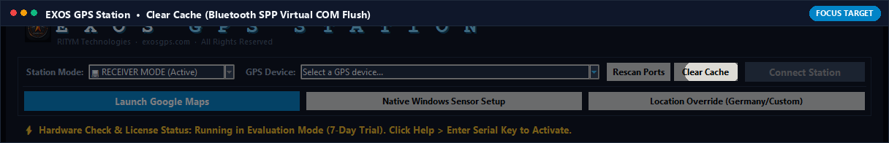
What it Does (In Plain English)
Cleans out old or disconnected Bluetooth entries that Windows might still remember, forcing a fresh, clean device scan.
Real-World Field Scenario
You upgraded your field phone to a new model, but Windows kept showing the old phone's name in the list. Clicking Clear Cache wipes the old cached records, cleanly displaying only the active new phone.
Technical Specifications & Protocol Architecture
- Deletes cached metadata JSON at %LOCALAPPDATA%/RiTym/Exos GPS Station/bluetooth_spp_ports.json.
- Forces clean synchronous query against Windows SetupAPI and PnP subsystem.

Connect Station / Disconnect Station Master Switch
Hardware Toolbar • Row 1 (Right)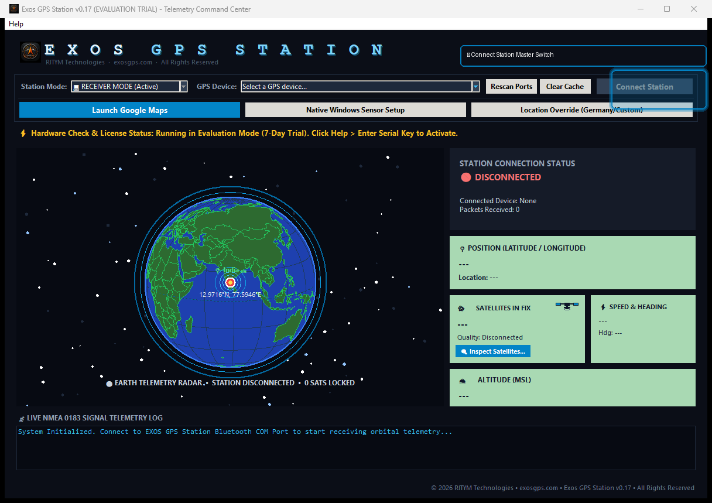
What it Does (In Plain English)
The master power switch that starts or stops receiving satellite data. When you click Connect, it establishes the communication pipe, turns bright red, and begins streaming live coordinates.
Real-World Field Scenario
You select your Galaxy Note 8 from the dropdown and click Connect Station. Within 1.5 seconds, the status indicator turns from red to green, the terminal floods with live satellite sentences, and your position locks onto the map.
Technical Specifications & Protocol Architecture
- Spawns dedicated asynchronous I/O daemon thread to prevent freezing the graphical message loop.
- Uses Win32 CancelSynchronousIo to cleanly abort blocked RFCOMM connection attempts without hanging the Windows serial subsystem.

Launch Google Maps Button (Local HTTP Bridge)
System Actions Toolbar • Row 2 (Left)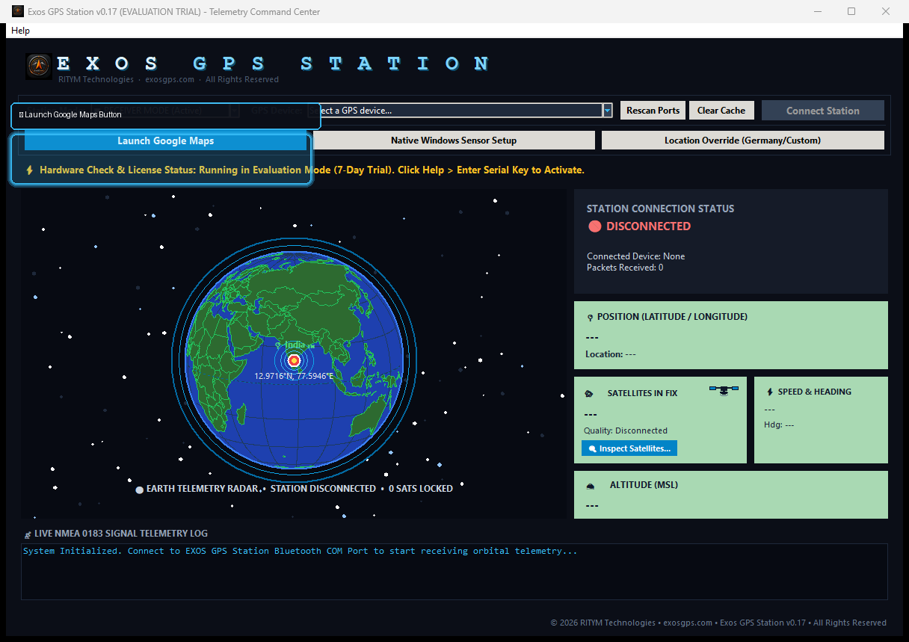
What it Does (In Plain English)
Opens Google Maps in your web browser centered exactly on your live GPS coordinates using our built-in local background server.
Real-World Field Scenario
You are navigating with your laptop in a vehicle. You click Launch Google Maps. Google Chrome opens automatically and centers satellite imagery directly on your live moving vehicle position.
Technical Specifications & Protocol Architecture
- Starts local embedded HTTP server listening on 127.0.0.1:9001.
- Returns live JSON payload on GET /location with lat, lon, alt, speed, bearing, and sats with Access-Control-Allow-Origin: * CORS headers.

Native Windows Sensor Setup (C# Geolocation Driver)
System Actions Toolbar • Row 2 (Center)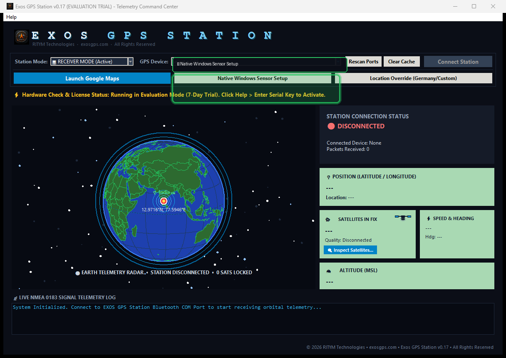
What it Does (In Plain English)
Installs and manages the special Windows driver that feeds your GPS position directly into Windows itself, allowing native apps like Windows Maps, Weather, and Cortana to see your real GPS position.
Real-World Field Scenario
You use offline Windows Maps on your laptop with no internet. Clicking Native Windows Sensor Setup registers EXOS GPS as the official system Location Provider. Windows Maps immediately wakes up and displays real-time navigation.
Technical Specifications & Protocol Architecture
- Native driver bridge powered by windows_sensor_manager.py and compiled C# COM DLLs.
- Implements ILocationProvider and ISensorDriver interfaces for the Windows 10/11 Location Platform.

Location Override Simulation (Custom Coordinates Spoofing)
System Actions Toolbar • Row 2 (Right)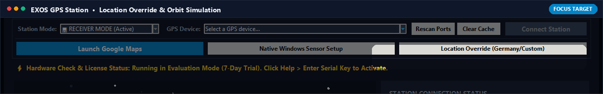
What it Does (In Plain English)
Allows developers and planners to simulate being in any location in the world without having to physically travel there. Perfect for testing software, emergency response drills, and offline map verification.
Real-World Field Scenario
You are preparing an expedition to Berlin, Germany, but you are currently in an office in New York. You click Location Override, choose Berlin (52.5200° N, 13.4050° E), and activate override. All your connected navigation programs immediately behave as though you are in Berlin.
Technical Specifications & Protocol Architecture
- Bypasses physical COM stream and generates mathematically consistent $GPGGA, $GPRMC sentences at 1.0 Hz with valid XOR checksums.

3D Compass & Artificial Horizon Widget
Main Visualizer Canvas • Left Half
What it Does (In Plain English)
An aircraft-style artificial horizon and digital compass rose showing which direction your vessel is pointing in real time, along with pitch and roll tilt angles.
Real-World Field Scenario
During night navigation or dense fog at sea, visual references to the horizon are lost. The 3D Compass reads True Heading ($GPHDT) streamed from your phone, providing a stable heading indicator that does not lag when the vessel rocks.
Technical Specifications & Protocol Architecture
- Hardware-accelerated Tkinter Canvas vector graphics with trigonometric sine/cosine rotation matrix.
- Driven by NMEA True Heading sentence $GPHDT,xxx.x,T*hh or Course Over Ground from $GPRMC at 30 FPS.

Offline Natural Earth 110m Vector World Map
Main Visualizer Canvas • Center & Background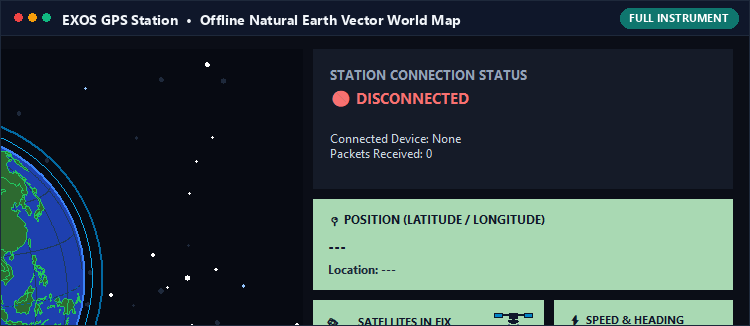
What it Does (In Plain English)
A built-in global world map that requires zero internet connection to work. It draws continental coastlines and country borders directly on your screen and places a glowing pulse marker where you are.
Real-World Field Scenario
You are in the middle of the ocean with zero cellular or satellite internet access. You open EXOS GPS Station. The world map renders immediately from local memory, plotting your vessel's exact position on the globe.
Technical Specifications & Protocol Architecture
- Natural Earth 110m resolution GeoJSON polygon database cached locally at assets/world_110m.geojson.
- Equirectangular cylindrical projection mapped to canvas coordinate space.

High-Contrast Telemetry Dashboard Cards
Right Telemetry Panel • 4 Dedicated Cards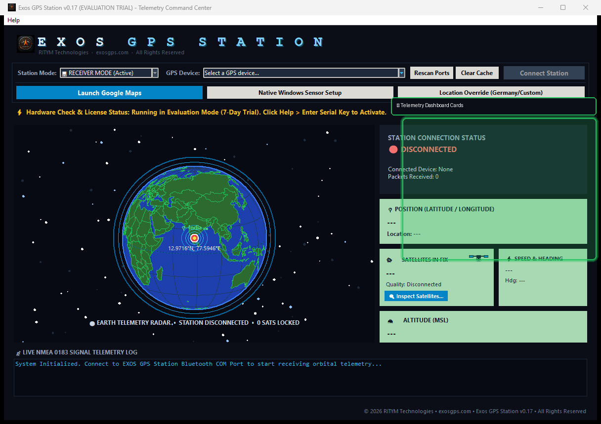
What it Does (In Plain English)
A crystal-clear, high-contrast dashboard displaying your exact latitude, longitude, speed in both knots and kilometers per hour, compass heading, and altitude above sea level.
Real-World Field Scenario
You are conducting high-speed coastal survey runs. Looking at the high-contrast dashboard, you monitor ground speed in both knots and km/h simultaneously without squinting, verifying vessel stability.
Technical Specifications & Protocol Architecture
- Tactical light green background (#A9D9B3) with deep charcoal typography (#0f172a) achieving WCAG AAA contrast ratio exceeding 7:1.
- 5-sample moving average filter on $GPRMC ground speed eliminates GPS jitter at low velocities.

Inspect Satellites... Button (Constellation Signal Spectrum)
Telemetry Card 2 • Blue Action Button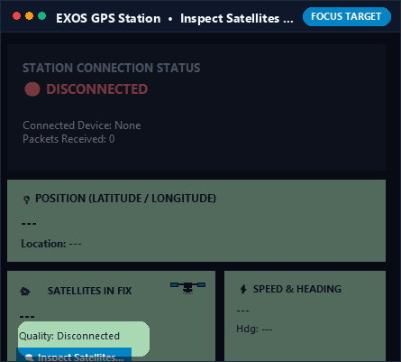
What it Does (In Plain English)
Opens a detailed window showing each satellite's individual signal strength bar and orbit identification number across GPS, GLONASS, and Galileo constellations.
Real-World Field Scenario
You notice your position is jumping around slightly in an urban canyon with tall buildings. You click Inspect Satellites... and observe that only 4 satellites have strong Signal-to-Noise Ratios (SNR > 35 dB-Hz). You reposition your antenna toward an open sky sector and immediately verify signal bars greening up.
Technical Specifications & Protocol Architecture
- Decodes $GPGSV and $GPGSA sentences.
- Measures carrier-to-noise density ratio (C/No) in dB-Hz for GPS (PRN 1-32), GLONASS (PRN 65-96), and Galileo (PRN 301-336).

Live NMEA 0183 Signal Telemetry Stream Console
Bottom Console Panel • Full Width Monospace Terminal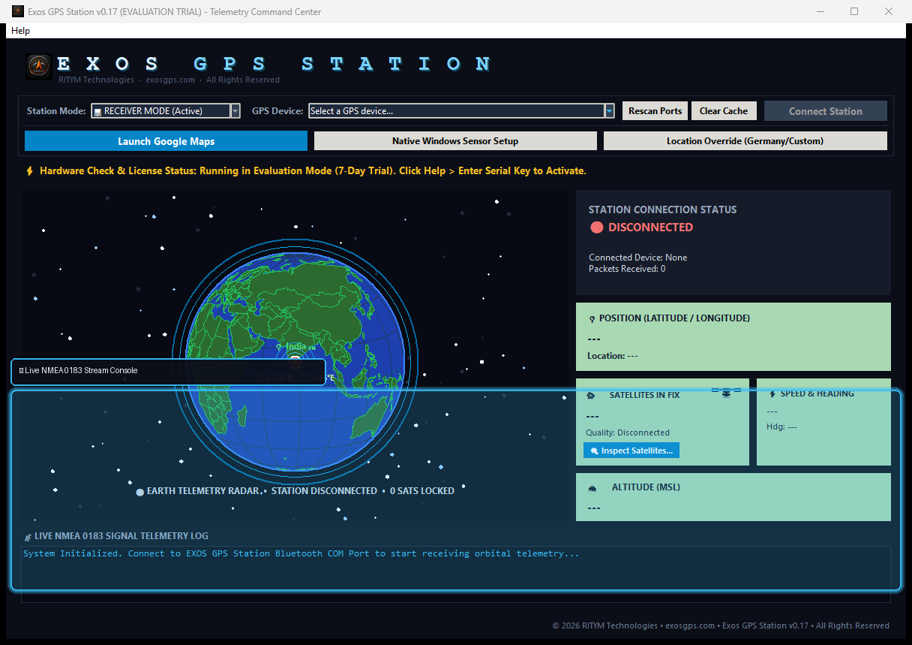
What it Does (In Plain English)
The 'heart monitor' of your GPS connection. It prints out the actual raw text sentences sent by the satellites every second, giving engineers and navigators total visibility into the live data feed.
Real-World Field Scenario
An external hydrographic sensor isn't receiving position fixes from your Windows setup. You look at the NMEA Console and immediately see lines starting with $GPGGA and $GPRMC streaming by with valid checksums (*72). You instantly confirm that the GPS receiver is functioning perfectly.
Technical Specifications & Protocol Architecture
- Consolas 9pt monospace terminal with cyber-blue highlighting (#38bdf8) on obsidian black (#070a12).
- Retains ring history of the last 200 packets for diagnostic review and forwards sentences to outbound virtual COM loopbacks.
Ready to Deploy Tactical Satellite Telemetry on Windows?
Download the official standalone Windows setup package and connect your mobile or hardware GPS in minutes.